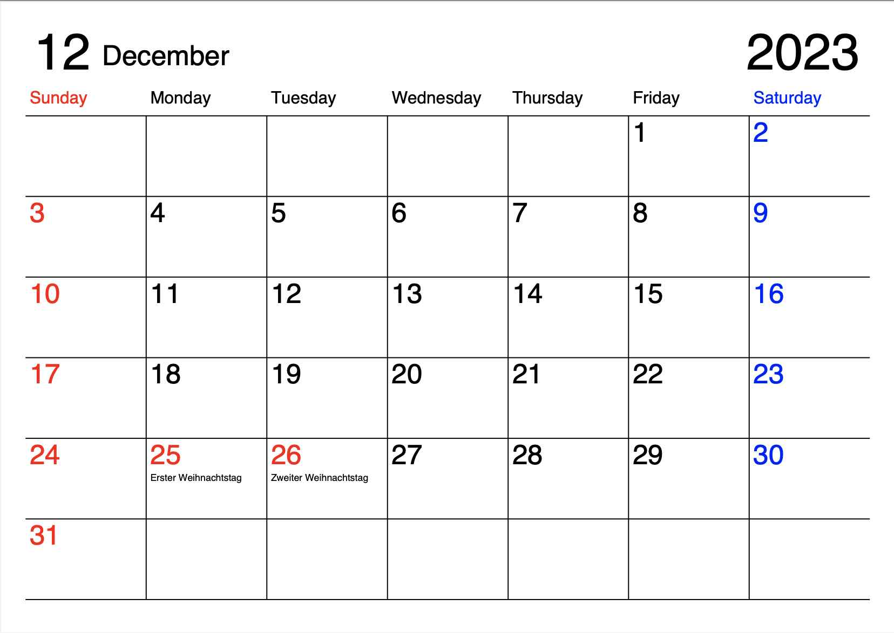
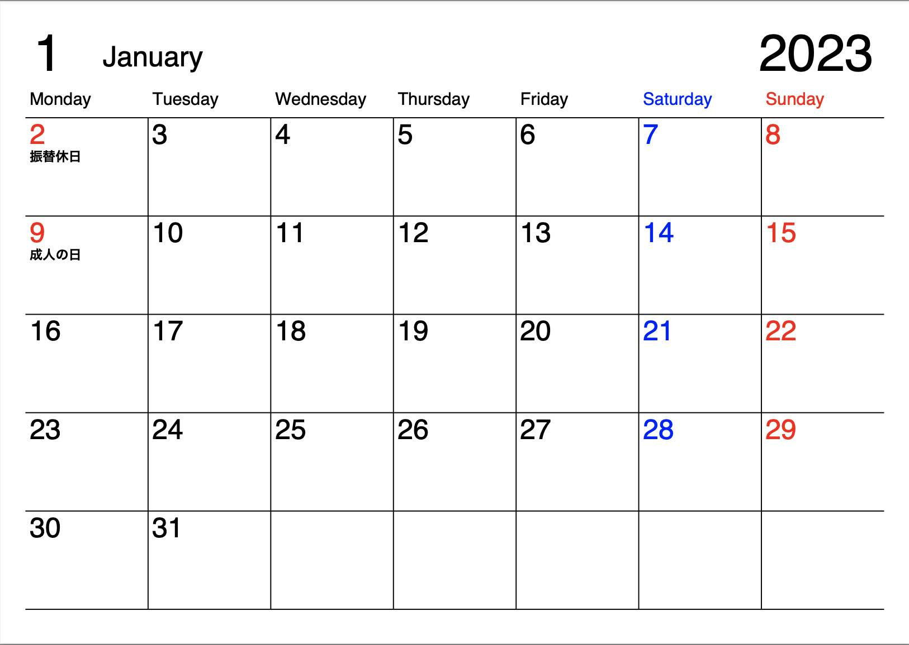

Table of Contents
1. はじめに
ここ数年、うちでは 印刷用シンプルなカレンダー (ご自由にお持ちください) を愛用しています。月曜始まりも選べるなどほぼ理想的な書き込み用カレンダーなのですが、一点だけ気になる点がありました。2023年1月のように1ヶ月が6週に渡ってしまうと、最後の1,2日が前の週にマージされてしまい、その2,4日は書き込みスペースが半分になってしまうのです。そこで、正月休みを利用して類似のカレンダーを自動生成するpythonスクリプトを作ってみました。githubにて 公開 しています。
ついでなので、世界の休日を選べるようにしてみました。(holidays というライブラリのおかげです)  なにげにドイツ版のサンプル画像。
2. カレンダー置き場
ここに置いてあるのは常に第1週を表示する版です。ご自由にお持ちください。リンクに飛んで、Downloadボタンをクリックしてください。用紙は日本はA4、米国がLetterに設定しました。
3. 6週に渡る月をどうしたものか
すべて表示すると6段になってしまい、書き込みスペースが全体的に小さくなるのでそれも嫌です。そこで思い切って、6週に渡る月は第1週を表示しないことを選択できるようにしました。表示しないとは言っても、前の月に削られた日のスペースがあるので、実用上は問題ない、、、かもしれません。 
4. simcal.pyの特長
- 印刷して書き込めるタイプのカレンダー(PDFファイル)を生成します
- 一月1ページ、12ページになります
- カレンダーの開始曜日を指定可能です(水曜始まりにもできます。。。)
- 国を選択して、その国の祭日を表示できます
- 6週に渡る月は第1週を表示しないことを選択できます
- A4とレターサイズが選択できます
5. カレンダーの生成のしかた
- Python 3.8以上を使えるようにします
- 前提ライブラリをインストールします
pip install holidays pip install reportlab
- simcal.pyをエディットしてconfigパラメーターを書き換えます
- スクリプト実行
python simcal.py
cal<年>.pdfファイルが生成されます
6. 参考にしたサイト、使用ライブラリ
6.0.1. 印刷用シンプルなカレンダー (ご自由にお持ちください)
我が家でも愛用しているカレンダーを毎年配布下さっています。どうもありがとうございます。私のスクリプト開発が間に合わず、今年(2023)もお世話になっています。今回作ったカレンダーのデザインは、こちらのカレンダーをほぼそのまま使わせていただいています。
6.0.2. reportlab 3.6.12
PDFを生成するPythonライブラリです。
6.0.3. holidays 0.18
休日を取得するPythonライブラリです。世界の休日が取得できます。